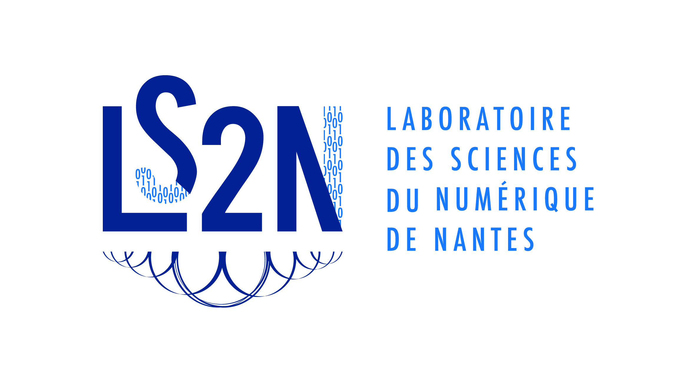

BuboCore : un séquenceur musical pour le live coding #
Qu’est-ce que BuboCore ? #
BuboCore est un logiciel protéiforme. Il peut être décrit comme un environnement de programmation créative et comme un séquenceur musical. C’est un outil d’expérimentation artistique, imaginé pour accompagner la réflexion autour de la conception de langages musicaux pour l’improvisation et la performance musicale. BuboCore est un outil visant à faciliter la pratique du live coding. Ce logiciel cherche à encourager tout musicien qui s’en saisit à adopter une approche performative de la programmation. Son fonctionnement incite à percevoir l’ordinateur comme un instrument musical, à prêter attention aux aspects créatifs et poétiques de l’expression au travers du code. Il propose une expérience immédiate, ludique et incarnée de la programmation musicale. BuboCore est un logiciel protéiforme.

Quel est son principe de fonctionnement ? #

BuboCore est basé sur le même principe de fonctionnement que les séquenceurs à pas d’une boîte à rythme plus traditionnelle. Ce modèle est ici adapté pour se plier à un mode de jeu nouveau : celui de la programmation à la volée. Chaque pas composant une séquence musicale est représenté sous la forme d’un court programme informatique, un script. Chaque script est d’une longueur et d’une complexité arbitraire. Il peut avoir, lors de son exécution, différents effets : émission de notes, de messages, modification de paramètres, de l’état du séquenceur et/ou du programme, etc. Les scripts sont libres d’interagir avec l’ensemble de l’environnement. L’environnement se compose quant à lui de différentes connexions à des logiciels et/ou des machines externes. Plusieurs séquences de scripts peuvent être jouées de concert, interrompues et/ou reprogrammées à la volée ! Les scripts sont exécutés en rythme, avec une précision temporelle métronomique. Le musicien possède un contrôle algorithmique complet aussi bien sur la définition des séquences que sur leur exécution ou sur le comportement du séquenceur.
À qui s’adresse BuboCore ? #
BuboCore a été pensé dès son origine pour accompagner l’apprentissage de la programmation et/ou de l’informatique musicale. Le logiciel est donc accessible pour tout musicien débutant, pour tout amateur et/ou pour tout curieux. Aucun prérequis technique ou musical n’est nécessaire pour commencer à l’utiliser. Toute la complexité de son utilisation naît de la maîtrise graduelle que le musicien acquiert par le jeu et l’expérimentation, de la maîtrise des notions les plus élémentaires aux techniques de programmation et de composition les plus avancées. BuboCore est un outil qui cherche à populariser de nouvelles manières de penser et de concevoir, au travers du code, l’expression musicale. L’outil est conçu pour être intuitif et n’exposer la complexité de son fonctionnement que de manière graduelle, à la demande du musicien.
Ce logiciel intéressera également des musiciens plus expérimentés ou des artistes intéressés par les arts numériques. Ils trouveront dans les outils proposés par BuboCore un ensemble de ressources et de techniques permettant de contrôler avec précision différentes machines, synthétiseurs, outils et logiciels de génération sonore/ visuelle, etc. BuboCore est tout à la fois un environnement de programmation et de prototypage extensible et open source, un séquenceur, un outil de collaboration musicale, etc. BuboCore peut servir à faciliter la préparation de performances complexes. Il peut aussi aider à formaliser certaines techniques de jeu et/ou manières de penser la composition musicale : techniques algorithmiques, génératives, stochastiques, aléatoires, etc. BuboCore propose un outillage complet pour explorer de nouvelles manières d’interagir avec les instruments numériques et les logiciels de création.
Quels langages de programmation sont supportés par BuboCore ? #
BuboCore est conçu pour héberger différents langages de programmation spécialisés dans la description d’événements musicaux. Chaque script d’une séquence peut être programmé à l’aide d’un langage de programmation choisi (et potentiellement créé !) par le musicien. Certains langages se spécialisent dans l’écriture de notes, d’autres dans la description d’évènements ou de procédés plus abstraits. Pouvoir choisir ou construire différents langages permet d’explorer librement différentes manières de programmer et de penser la musique. Cela permet aussi de trouver le langage et les abstractions les plus adaptées à un style de jeu, à une manière de faire, etc. Différents langages peuvent être ajoutés à condition que ceux-ci puissent être compilés/interprétés dans la représentation intermédiaire utilisée par le moteur événémentiel interne de BuboCore. Au fondement de BuboCore se trouve un langage intermédiaire générique et puissant, proche du langage machine, permettant de décrire de manière abstraite des programmes musicaux sous une forme impérative.
Quel rôle joue BuboCore dans un environnement de création musicale ? #
BuboCore n’émet aucun son, il s’agit d’un logiciel conçu pour occuper une position intermédiaire dans un environnement de création. Il est pensé pour être utilisé en conjonction avec d’autres logiciels de création musicale, synthétiseurs, boîtes à rythmes, logiciels et langages de traitement du signal, etc. L’outil est entièrement tourné vers la communication inter-logicielle et la synchronisation/synergie avec d’autres outils ou musiciens. BuboCore peut émettre ou recevoir des messages MIDI et OSC. Il peut être synchronisé au travers du protocole Ableton Link ou d’une horloge MIDI. Le logiciel peut aussi servir de contrôleur central et de métronome pour d’autres logiciels ou machines.
À propos #

#
BuboCore est un logiciel de création musicale conçu dans le cadre d’un projet de recherche soutenu par l’Athénor CNCM de Saint-Nazaire et par le laboratoire LS2N de l’université de Nantes. Ce logiciel est disponible en libre accès et sous licence open source.
